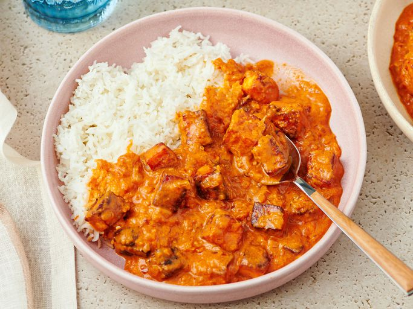

Link Back to Homepage
Paneer Butter Masala recipe

Description of Paneer Butter Masala
Paneer Butter Masala is a luxurious North Indian vegetarian curry featuring tender paneer cubes cooked in a velvety, tomato-cashew based gravy enriched with butter, cream, and fragrant spices. This mildly spiced, slightly sweet dish pairs perfectly with naan, roti or jeera rice, making it a favorite in Indian cuisine. With my video and step-by-step guide you can easily make this most flavorful, tasty and restaurant style Paneer Butter Masala recipe at home!
Ingredients
- Paneer
- Onion-tomatoes
- Cashews
- Spices
- Butter and cream
Steps
-
Heat 1 teaspoon of oil in a pan on medium heat. Once the oil is hot, add the bay leaf, cinnamon stick, cloves and saute for few seconds.
Then add the the onion, garlic, ginger and saute for 2 to 3 minutes until the onion is translucent.
- Add the tomatoes and cashews and mix
- Then add 1 cup of water.
- Cover the pan and cook on medium heat for 15 minutes.
- After 15 minutes, remove the pan from heat. Remove the bay leaf, cinnamon stick and cloves
- Let the mixture cool down a bit and then transfer to a blender. It’s important to let it cool down a bit else it will all blow up from the mixer.
- Grind the masala to a smooth paste and set aside..
- Once the butter melts, add the red chili powder and the Kashmiri red chili powder and fry for few seconds. This will give the curry a nice red color.
- Then add the ground paste back into the pan along with the garam masala (start with 1/2 teaspoon and add the remaining 1/4 teaspoon at the end only if you feel like the curry needs that extra bit of garam masala), cardamom powder, sugar, salt and tomato paste (if using).
- Then add the cream and mix.
- Add in the paneer and cook for 2 to 3 minutes on medium heat. Finally add crushed kasuri methi.